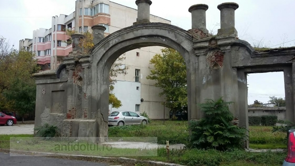

Like Erol Ozan said Some beautiful paths can’t be discovered without getting lost
,so, let's take a look at their opinions about the city.
- A blogger said:
- Galati is a city in the region of Moldavia - eastern Romania - on the banks of the Danube. The country's largest shipyard on Danube is located here, which benefits from the good access Galati has to the Black Sea through the Danube Delta. The first mention of the city dates from 1445, and in 1789 it was burnt down during the Russian-Turkish War. A renowned peasant revolt took place in and around the city in 1907. In Bram Stoker's novel Dracula, Galati is the port at which Count Dracula disembarked his ship on his escape back to Transylvania.
- Galati has a 20th century Romanian Orthodox cathedral, St. George, and another fortified church, St. Mary (Sf. Precista), on the banks of the Danube, built in 1647. Legend has it that a tunnel was dug from the church and under the river. The city also has a botanical garden, several museums, the newly-restored Opera House, and a sculpture park of several kilometres along the banks of the Danube. The Galati TV Tower is a 150 metre tall telecommunication tower, built of concrete and open to the public, which offers a full view of the city.
- An anonymus person said:
- If you are looking for an affordable holiday destination and not far from home, you can consider Galați. Romania is a beautiful country, which is worth discovering, and the city on the Danube does not give up on this idea either. In Galați there are a lot of interesting tourist attractions, which it would be a shame to miss. Today, we are your guide for a weekend in the port city and we tell you what are the most important places to visit during your stay!
- The Navigation Palace was built in 1912, serving as the headquarters for various offices of river transport institutions. It is important to mention that the River Station is the first construction in Romania for which a reinforced concrete monolithic skeleton was used. You should also know that the location can be visited completely free of charge, so one more reason to put it on the list of tourist attractions to see!
- Discovering the streets of Galati, you will notice the influences of the Turkish invasion. They left their mark on the place that still preserves the ruins of some buildings erected by them between the 18th and 19th centuries. The Turkish Gate is, in fact, the old gate of an Inn, which in ancient times offered accommodation. Unfortunately, following an incident caused by the inattention of a worker in 1982, much of this monument was demolished. Thus, at present, only the Gate of the Inn remains standing, which is also in a rather advanced state of degradation.

<------------------- The Navigation Palace
The Turkish Gate ------------------------>